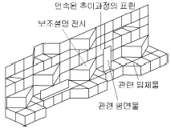
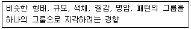
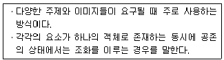
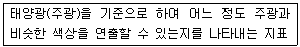
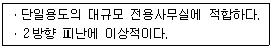
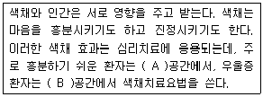
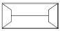
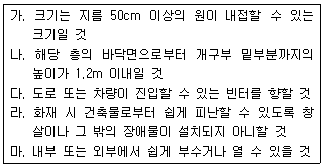

실내건축산업기사 (2015-03-08 기출문제)
1과목: 실내디자인론
1. 다음 그림이 나타내는 특수전시기법은?

- 디오라마 전시
- 아일랜드 전시
- 파노라마 전시
- 하모니카 전시
(정답률: 73%)

2. 다음 중 부엌의 작업순서에 따른 작업대의 배열순서로 알맞은 것은?
- 준비대 → 개수대 → 가열대 → 조리대 → 배선대
- 준비대 → 조리대 → 가열대 → 개수대 → 배선대
- 준비대 → 개수대 → 조리대 → 가열대 → 배선대
- 준비대 → 조리대 → 개수대 → 가열대 → 배선대
(정답률: 77%)
3. 필요에 따라 이동시켜 사용할 수 있는 간이의자로 크지 않으며 가벼운 느낌의 형태를 갖는 것은?
- 세티
- 카우치
- 풀업체어
- 라운지체어
(정답률: 63%)
4. 상점의 동선계획에 관한 설명으로 옳지 않은 것은?
- 종업원 동선은 작업의 효율성을 고려하여 계획한다.
- 고객 동선은 가능한 짧고 간단하게 하는 것이 이상적이다.
- 상품 동선은 상품의 반ㆍ출입, 보관, 포장, 발송 등과 같은 상점 내에서 상품이 이동하는 동선이다.
- 동선 계획은 평면 계획의 기본 요소로 기능적으로 역할이 서로 다른 동선은 교차되거나 혼용되지 않도록 한다.
(정답률: 79%)
5. 다음 중 평범하고 단순한 실내를 흥미롭게 만드는데 가장 효과적인 디자인 원리는?
- 조화
- 강조
- 통일
- 균형
(정답률: 72%)
6. 커튼(curtain)에 관한 설명으로 옳지 않은 것은?
- 드레퍼리 커튼은 일반적으로 투명하고 막과 같은 직물을 사용한다.
- 새시 커튼은 창문 전체를 커튼으로 처리하지 않고 반정도만 친 형태이다.
- 글라스 커튼은 실내로 들어오는 빛을 부드럽게 하며 약간의 프라이버시를 제공한다.
- 드로우 커튼은 창문 위의 수평 가로대에 설치하는 커튼으로 글라스 커튼보다 무거운 재질의 직물로 처리한다.
(정답률: 56%)
7. 실내디자인에 관한 설명으로 옳지 않은 것은?
- 실내디자인은 미술에 속하므로 미적인 관점에서만 그 성공여부를 판단할 수 있다.
- 실내디자인의 영역은 주거공간, 상업공간, 업무공간, 특수공간 등으로 나눌 수 있다.
- 실내디자인은 목적을 위한 행위이나 그 자체가 목적이 아니고 특정한 효과를 얻기 위한 수단이다.
- 실내디자인이란 인간이 거주하는 실내공간을 보다 능률적이고 쾌적하며 아름답게 계획, 설계하는 작업이다.
(정답률: 77%)
8. 실내디자인의 프로그래밍 진행단계로 알맞은 것은?
- 분석-목표설정-종합-조사-결정
- 종합-조사-분석-목표설정-결정
- 목표설정-조사-분석-종합-결정
- 조사-분석-목표설정-종합-결정
(정답률: 72%)
9. 전시실의 순회형식 중 연속순회형식에 관한 설명으로 옳은 것은?
- 연속된 전시실의 한쪽 복도에 의해서 각 실을 배치한 형식이다.
- 각 실에 직접 들어갈 수 있으며 필요시에는 자유로이 독립적으로 폐쇄할 수 있다.
- 1실을 폐쇄할 경우 전체 동선이 막히게 되므로 비교적 소규모의 전시실에 적합하다.
- 중심부에 하나의 큰 홀을 두고 그 주위에 각 전시실을 배치하여 자유로이 출입하는 형식이다.
(정답률: 63%)
10. 할로겐 전구에 관한 설명으로 옳은 것은?
- 백열전구보다 수명이 짧다.
- 흑화가 거의 일어나지 않는다.
- 휘도가 낮아 현휘가 발생하지 않는다.
- 소형, 경량화가 불가능하여 사용 개소에 제한을 받는 다.
(정답률: 58%)
11. 주택의 실구성 형식에 관한 설명으로 옳지 않은 것은?
- DK형은 이상적인 식사공간 분위기 조성이 비교적 어렵다.
- LD형은 식사도중 거실의 고유 기능과의 분리가 어렵다.
- LDK형은 거실, 식당, 부엌 각 실의 독립적인 안정성 확보에 유리하다.
- LDK형은 공간을 효율적으로 활용할 수 있어서 소규모 주택에 주로 이용된다.
(정답률: 67%)
12. 다음 중 황금비율로 가장 알맞은 것은?
- 1 : 0.632
- 1 : 1.414
- 1 : 1.618
- 1 : 3.141
(정답률: 82%)
13. 촉각 또는 시각으로 지각할 수 있는 어떤 물체 표면상의 특징을 의미하는 것은?
- 모듈
- 패턴
- 스케일
- 질감
(정답률: 79%)
14. 다음 설명에 알맞은 형태의 지각심리는?

- 근접성
- 연속성
- 유사성
- 폐쇄성
(정답률: 70%)
15. 다음 설명에 알맞은 조화의 종류는?

- 단순조화
- 유사조화
- 동등조화
- 복합조화
(정답률: 68%)
16. 다음 설명에 알맞은 조명과 관련된 용어는?

- 주광률
- 연색성
- 색온도
- 조명률
(정답률: 56%)
17. 공간에 관한 설명으로 옳지 않은 것은?
- 내부 공간의 형태는 바닥, 벽, 천장의 수직, 수평적 요소에 의해 이루어진다.
- 평면, 입면, 단면의 비례에 의해 내부 공간의 특성이 달라지며 사람은 심리적으로 다르게 영향을 받는다.
- 내부 공간의 형태에 따라 가구유형과 형태, 가구배치 등 실내의 제요소들이 달라진다.
- 불규칙적 형태의 공간은 일반적으로 한 개 이상의 축을 가지며 자연스럽고 대칭적이어서 안정되어 있다.
(정답률: 76%)
18. 실내공간 구성요소에 관한 설명으로 옳지 않은 것은?
- 천장의 높이는 실내공간의 사용목적과 깊은 관계가 있다.
- 바닥을 높이거나 낮게 함으로서 공간영역을 구분, 분리할 수 있다.
- 여닫이문은 밖으로 여닫는 것이 원칙이나 비상문의 경우 안여닫이로 한다.
- 벽의 높이가 가슴 정도이면 주변공간에 시각적 연속성을 주면서도 특정 공간을 감싸주는 느낌을 준다.
(정답률: 69%)
19. 상점의 출입구 및 홀의 입구부분을 포함한 평면적인 구성과 광고판, 사인(sign)의 외부 장치를 포함한 입체적인 구성요소의 총체를 의미하는 것은?
- 파사드
- 아케이드
- 쇼윈도우
- 디스플레이
(정답률: 72%)
20. 다음 설명에 알맞은 사무소 코어의 유형은?

- 편심코어형
- 중심코어형
- 독립코어형
- 양단코어형
(정답률: 67%)
2과목: 색채 및 인간공학
21. 다음 중 동작경제의 원칙과 가장 거리가 먼 것은?
- 두 팔의 동작은 항상 같은 방향으로 움직인다.
- 모든 공구나 재료는 자기 위치에 있도록 한다.
- 가능한 한 관성과 중력을 이용하여 작업을 한다.
- 손의 동작은 완만하게 연속적인 동작이 되도록 한다.
(정답률: 63%)
22. 다음 중 경계 및 경고 신호의 선택이나 설계에 관한 일반적인 권장사항으로 가장 올바른 것은?
- 멀리 보내는 신호는 1000Hz 이하의 낮은 주파수를 사용한다.
- 큰 장애물이나 칸막이를 넘어서 휘어가는 신호는 3000Hz 이상의 높은 주파수를 사용한다.
- 상황에 따라 다른 경계신호를 사용하며, 이에 따라 상이한 반응이 요구될 때는 서로 식별되지 않는 것이어야 한다.
- 귀가 가장 민감하지 않은 200Hz 이하를 사용한다.
(정답률: 40%)
23. 인간과 기계의 특성 중 기계가 인간보다 우수한 기능으로 옳은 것은?
- 완전히 새로운 해결책을 찾아낸다.
- 오랜 기간에 걸쳐 작업을 수행한다.
- 원칙을 적용하여 다양한 문제를 해결한다.
- 다양한 운용상의 요건에 맞추어 신체적인 반응을 적응시킨다.
(정답률: 61%)
24. 인간의 정보처리 중 정보의 보관과 관련되지 않은 것은?
- 장기 기억(long-term memory)
- 감각 보관(sensory storage)
- 단기 기억(short-term memory)
- 인지 및 회상(recognition and recall)
(정답률: 52%)
25. 다음 중 인체 계측 자료를 이용하여 설계하고자 할때 대상 자료를 선택하는 원칙에 해당되지 않는 것은?
- 극단치를 이용한 설계
- 조절범위를 이용한 설계
- 평균치를 기준으로 한 설계
- 상대적 유의치수를 이용한 설계
(정답률: 42%)
26. 다음 중 푸르킨예(Purkinje effect) 현상이 적용되는 것은?
- 명도대비
- 착시현상
- 암순응
- 시선의 이동
(정답률: 53%)
27. 다음 중 인체측정치를 고려한 설계시 주의사항으로 가장 부적합한 것은?
- 사람은 항상 움직이므로 여유 있는 치수를 잡아둔다.
- 가능한 한 장비나 설비의 치수를 조절할 수 있도록 한다.
- 구조적 인체치수를 그대로 사용하기 보다는 기능적 인체치수를 측정하여 활용한다.
- 대부분의 경우 평균치를 사용하는 것이 적합하다.
(정답률: 55%)
28. 다음 중 위험표지판의 해골이나 뼈와 같이 사물이나 행동을 단순하고 정확하게 표현하는 부호를 무엇이라 하는가?
- 묘사적 부호
- 추상적 부호
- 임의적 부호
- 은유적 부호
(정답률: 59%)
29. 머리와 안구를 고정하여 한 점을 주시했을 때 동시에 보이는 외계의 범위를 시야라 하는데 다음 중 시야가 가장 넓어지는 색은?
- 백색
- 녹색
- 적색
- 청색
(정답률: 43%)
30. 흰색 종이의 반사율이 80%, 인쇄된 검정색 글자의 반사율이 15%라 할 때 대비는 얼마인가?
- 61%
- 70%
- 81%
- 88%
(정답률: 45%)
31. 우리 눈의 시각세포에 대한 설명 중 옳은 것은?
- 간상세포는 밝은 곳에서만 반응한다.
- 추상세포가 비정상이면 색맹 또는 색약이 된다.
- 간상세포는 색상을 느끼는 기능이 있다.
- 추상세포는 어두운 곳에서의 시각을 주로 담당한다.
(정답률: 55%)
32. 보기의 ( )에 들어갈 적합한 색으로 옳은 것은?

- A : 빨간색, B : 파란색
- A : 파란색, B : 빨간색
- A : 노란색, B : 연두색
- A : 연두색, B : 노란색
(정답률: 60%)
33. 서로 다른 색을 구분 할 수 있는 것은 빛의 무슨 성질 때문인가?
- 파장
- 자외선
- 적외선
- 전파
(정답률: 68%)
34. 베졸드 효과(Bezold effect)의 설명으로 틀린 것은?
- 빛이 눈의 망막 위에서 해석되는 과정에서 혼색효과를 가져다주는 일종의 가법혼색이다.
- 색점을 섞어 배열한 후 거리를 두고 관찰할 때 생기는 일종의 눈의 착각현상이다.
- 여러 색으로 직조된 직물에서 하나의 색만을 변화시키거나 더할 때 생기는 전체 색조의 변화이다.
- 밝기와 강도에서는 혼합된 색의 면적비율에 상관없이 강한 색에 가깝게 지각된다.
(정답률: 47%)
35. 어두운 영화관에 들어갔을 때 한참 후에야 주위 환경을 지각하게 되는 시지각 현상은?
- 명순응
- 색순응
- 암순응
- 시순응
(정답률: 72%)
36. 색각에 대한 학설 중 3원색설을 주장한 사람은?
- 헤링
- 영ㆍ헬름홀츠
- 맥니콜
- 먼셀
(정답률: 52%)
37. 빨강, 파랑, 노랑과 같이 색지각 또는 색감각의 성질을 갖는 색의 속성은?
- 색상
- 명도
- 채도
- 색조
(정답률: 67%)
38. 색채관리에 대한 설명으로 거리가 먼 것은?
- 기업운영의 중요한 기술이라 할 수 있다.
- 디자인과 색채를 통일하여 좋은 기업상을 만들 수 있다.
- 제품의 생산단계에서부터 도입하여 색채관리를 한다.
- 소비자가 구매충동을 일으킬 수 있는 색채관리가 필요하다.
(정답률: 59%)
39. 다음 색체계 중 혼색계를 나타내는 것은?
- 먼셀 체계
- NCS 체계
- CIE 체계
- DIN 체계
(정답률: 50%)
40. 방화, 금지, 정지, 고도위험 등의 의미를 전달하기위해 주로 사용되는 색은?
- 노랑
- 녹색
- 파랑
- 빨강
(정답률: 72%)
3과목: 건축재료
41. 파티클 보드에 관한 설명 중 틀린 것은?
- 강도에 방향성이 없다.
- 두께는 비교적 자유로이 선택할 수 있다.
- 방충, 방부성이 크다.
- 못이나 나사못의 지지력이 일반목재에 비해 매우 작다.
(정답률: 52%)
42. 석회암(CaCO3)을 900~1200℃ 정도로 가열 소성하여 얻어지는 것은?
- 소석회
- 생석회
- 무수석고
- 마그네시아 석회
(정답률: 46%)
43. 다음 합성수지 중 방수성이 가장 강한 수지는?
- 푸란수지
- 멜라민수지
- 실리콘수지
- 알키드수지
(정답률: 60%)
44. 석재의 재료적 특징에 대한 설명으로 틀린 것은?
- 외관이 장중하고 석질이 치밀한 것을 갈면 미려한 광택이 난다.
- 압축강도는 인장강도에 비해 매우 작아 장대재(長大材)를 얻기 어렵다.
- 화열에 닿으면 화강암은 균열이 발생하여 파괴된다.
- 비중이 크고 가공이 불편하다.
(정답률: 45%)
45. 다음 중 점토 제품이 아닌 것은?
- 테라죠
- 테라코타
- 타일
- 내화벽돌
(정답률: 44%)
46. 한번에 두꺼운 도막을 얻을 수 있으며 넓은 면적의 평판도장에 최적인 도장방법은?
- 브러시칠
- 롤러칠
- 에어스프레이
- 에어리스 스프레이
(정답률: 58%)
47. 콘크리트의 배합설계 시 고려할 사항으로 가장 거리가 먼 것은?
- 잔골재율
- 양생
- 혼화제량
- 물-시멘트비
(정답률: 54%)
48. 철강의 부식 및 방식에 대한 설명 중 틀린 것은?
- 철강의 표면은 대기 중의 습기나 탄산가스와 반응하여 녹을 발생시킨다.
- 철강은 물과 공기에 번갈아 접촉되면 부식되기 쉽다.
- 방식법에는 철강의 표면을 Zn, Sn, Ni 등과 같은 내식성이 강한 금속으로 도금하는 방법이 있다.
- 일반적으로 산에는 부식되지 않으나 알칼리에는 부식된다.
(정답률: 56%)
49. 섬유벽 바름에 대한 설명으로 틀린 것은?
- 주원료는 섬유상 또는 입상물질과 이들의 혼합재이다.
- 균열발생은 크나, 내구성이 우수하다.
- 목질섬유, 합성수지 섬유, 암면 등이 쓰인다.
- 시공이 용이하기 때문에 기존벽에 덧칠하기도 한다.
(정답률: 46%)
50. 실리카시멘트의 특징이 아닌 것은?
- 블리딩 감소 및 워커빌리티를 증가시킬 수 있다.
- 건조수축은 감소하나, 화학저항성 및 내수성이 약하다.
- 초기강도는 약간 적으나 장기강도는 크다.
- 알칼리골재반응에 의한 팽창의 저지에 유효하다.
(정답률: 40%)
51. 알루미늄(aluminium)의 일반적 성질에 대한 설명으로 틀린 것은?
- 광선 및 열반사율이 높다.
- 해수 및 알칼리에 강하다.
- 독성이 없고 내구성이 좋다.
- 압연, 인발 등의 가공성이 좋다.
(정답률: 59%)
52. 기건상태에서 목재의 평균 함수율로 옳은 것은?
- 15% 내외
- 20% 내외
- 25% 내외
- 30% 내외
(정답률: 48%)
53. 건축용으로 많이 사용되는 석재의 역학적 성질 중 압축강도에 대한 설명으로 틀린 것은?
- 중량이 클수록 강도가 크다.
- 결정도와 결합상태가 좋을수록 강도가 크다.
- 공극률과 구성입자가 클수록 강도가 크다.
- 함수율이 높을수록 강도는 저하된다.
(정답률: 48%)
54. 목재의 단판(veneer)제법 중 원목을 회전시키면서 연속적으로 얇게 벗기는 것으로 넓은 단판을 얻을 수 있고 원목의 낭비가 적은 것은?
- 로터리 베니어
- 슬라이스드 베니어
- 소오드 베니어
- 반 소오드 베니어
(정답률: 53%)
55. 목재의 유성 방부제로서 방부성은 우수하나 악취가 나고 흑갈색으로 외관이 불미하여 눈에 보이지 않는 토대, 기둥, 도리 등에 사용되는 것은?
- 크레오소트유
- PF방부제
- CCA 방부제
- P.C.P 방부제
(정답률: 46%)
56. 시멘트에 대한 일반적인 내용으로 옳지 않은 것은?
- 시멘트의 수화반응에서 경화 이후의 과정을 응결이라 한다.
- 시멘트의 분말도가 클수록 수화작용이 빠르다.
- 시멘트가 풍화되면 수화열이 감소된다.
- 시멘트는 풍화되면 비중이 작아진다.
(정답률: 32%)
57. 주철관이 오수관(汚水管)으로 사용되는 가장 큰 이유는?
- 인장강도가 크기 때문이다.
- 압축강도가 크기 때문이다.
- 내식성이 뛰어나기 때문이다.
- 가공성이 좋기 때문이다.
(정답률: 57%)
58. 구조용 강재에 반복하중이 작용하면 항복점 이하의 강도에서도 파괴될 수 있다. 이와 같은 현상을 무엇이라 하는가?
- 피로 파괴
- 인성 파괴
- 연성 파괴
- 취성 파괴
(정답률: 45%)
59. 접착제로서 알루미늄 접착에 가장 적합한 것은?
- 요소수지
- 에폭시수지
- 알키드수지
- 푸란수지
(정답률: 51%)
60. 다음 흡음재료 중 고음역 흡음재료로 가장 적당한 것은?
- 파티클 보드
- 구멍 뚫린 석고 보드
- 구멍 뚫린 알루미늄 판
- 목모 시멘트 판
(정답률: 35%)
4과목: 건축일반
61. 그림과 같은 평면을 가진 지붕의 명칭은?

- 박공지붕
- 합각지붕
- 모임지붕
- 반박공지붕
(정답률: 54%)
62. 계단의 구성에서 보행에 피로가 생길 우려가 있어 도중에 3~4단을 하나의 넓은 단으로 하거나 꺽여 돌아가는 곳에 넓게 만든 것을 무엇이라 하는가?
- 계단실
- 디딤단
- 계단중정
- 계단참
(정답률: 63%)
63. 피난층 또는 지상으로 통하는 직통계단을 특별피난계단으로 설치하여야 하는 층에 해당하는 것은? (단, 당해 층의 바닥면적은 400m2 이상임)
- 건축물의 10층
- 지하 2층
- 계단실형 공동주택의 16층
- 갓복도식 공동주택의 11층
(정답률: 42%)
64. 한 켜에서 마구리와 길이를 번갈아 놓아 쌓고, 다음 켜는 마구리가 길이의 중심부에 놓이게 쌓는 것으로, 통줄눈이 생겨서 덜 튼튼하지만 외관이 좋아 강도보다는 미관을 위주로 하는 벽체 또는 벽돌담 등에 사용되는 벽돌 쌓기법은?
- 불식쌓기
- 화란식쌓기
- 영식쌓기
- 미식쌓기
(정답률: 52%)
65. 건축법상의 ‘주요구조부’에 해당하지 않는 것은?
- 내력벽
- 기둥
- 지붕틀
- 최하층바닥
(정답률: 52%)
66. 건물의 피난층 외의 층에서는 거실의 각 부분으로부터 피난층 또는 지상으로 통하는 직통계단까지 보행거리를 최대 얼마 이하로 해야 하는가? (단, 예외사항은 제외)
- 10m
- 20m
- 30m
- 40m
(정답률: 52%)
67. 왕대공지붕틀에서 압축력과 휨모멘트를 동시에 받는 부재는?
- 왕대공
- ㅅ자보
- 빗대공
- 중도리
(정답률: 55%)
68. 르네상스 건축양식에 해당하는 건축물은?
- 영국 솔즈베리 대성당
- 이탈리아 피렌체 대성당
- 프랑스 노틀담 대성당
- 독일 울름 대성당
(정답률: 55%)
69. 건축구조에서 일체식 구조에 속하는 것은?
- 철골구조
- 돌구조
- 벽돌구조
- 철골ㆍ철근 콘크리트구조
(정답률: 62%)
70. 한국건축 의장계획의 특징과 가장 거리가 먼 것은?
- 인위적 기교
- 풍수지리 사상
- 친근감을 주는 인간적 척도
- 시각적 착각교정
(정답률: 56%)
71. 방염성능기준 이상의 실내장식물 등을 설치하여야 하는 특정소방대상물에 해당하지 않는 것은?
- 건축물의 옥내에 있는 수영장
- 근린생활시설 중 체력단력장
- 방송통신시설 중 방송국
- 건축물의 옥내에 있는 종교시설
(정답률: 66%)
72. 주요구조부가 내화구조인 건축물로서 내화구조로 된 바닥ㆍ벽 및 갑종방화문으로 방화구획하여야 하는 건축물의 연면적 기준은?
- 연면적이 300m2를 넘는 것
- 연면적이 500m2를 넘는 것
- 연면적이 800m2를 넘는 것
- 연면적이 1,000m2를 넘는 것
(정답률: 37%)
73. 단독경보형감지기를 설치하여야 하는 특정소방대상물에 해당하지 않는 것은?
- 연면적 800m2인 아파트등
- 연면적 1200m2인 기숙사
- 수련시설 내에 있는 합숙소로서 연면적이 1500m2인 것
- 연면적 500m2인 숙박시설
(정답률: 29%)
74. 건축물 내부에 설치하는 피난계단의 구조 기준으로 틀린 것은?
- 계단은 내화구조로 하고 피난층 또는 지상까지 직접 연결되도록 한다.
- 계단실에는 예비전원에 의한 조명설비를 한다.
- 계단실의 실내에 접하는 부분의 마감은 난연재료로 한다.
- 건축물의 내부에서 계단실로 통하는 출입구의 유효너비는 0.9m 이상으로 한다.
(정답률: 60%)
75. 건축물의 설계자가 건축구조기술사의 협력을 받아 구조의 안전을 확인하여야 하는 건축물의 최소 층수 기준은?
- 3층 이상
- 4층 이상
- 5층 이상
- 6층 이상
(정답률: 40%)
76. 화재안전기준에 따라 소화기구를 설치하여야 하는 특정소방대상물의 최소 연면적 기준은?
- 20m2이상
- 33m2이상
- 42m2 이상
- 50m2이상
(정답률: 58%)
77. 문화 및 집회시설에 쓰이는 건축물의 거실에 배연설비를 설치하여야 할 경우에 해당하는 최소 층수 기준은?
- 6층
- 10층
- 16층
- 20층
(정답률: 49%)
78. 철골 구조의 특징이 아닌 것은?
- 재료의 균질도가 높으며 내력이 크기 때문에 건물의 중량을 가볍게 할 수 있다.
- 장스팬의 구조물이나 고층건물에 적합하다.
- 고열에 강하며 다른 구조체에 비하여 고가이다.
- 내진적이며, 수평력에 강하다.
(정답률: 46%)
79. 소방관계법규에서 정의하는 무창층이 되기 위한 개구부 면적의 합계 기준은? (단, 개구부란 아래 요건을 충족)

- 해당 층의 바닥면적의 1/20 이하
- 해당 층의 바닥면적의 1/25 이하
- 해당 층의 바닥면적의 1/30 이하
- 해당 층의 바닥면적의 1/35 이하
(정답률: 58%)
80. 소화활동설비에 해당되는 것은?
- 스프링클러설비
- 자동화재탐지설비
- 상수도소화용수설비
- 연결송수관설비
(정답률: 42%)